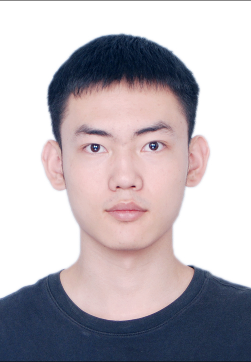
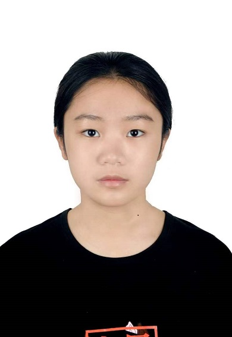

副教授
戴一冕
状态: 副教授
研究方向: 红外小目标
成果: 主持发布 SIRST V1、SIRST V2、DenseSIRST、HazyDet、GrokLST 等多个开源数据集。主持国自然青基、博士后面上等校企合作项目 5 项，主要成果发表在 IJCV、IEEE TGRS等国际知名期刊。谷歌学术引用 3500 余次引用，入选斯坦福前 2% 顶尖科学家榜单。曾获河南省教育厅科技成果二等奖（排名第二）、首届粤港澳大湾区国际算法算例大赛遥感目标检测赛道亚军、“吉林一号”杯卫星遥感应用青年创新创业大赛一等奖。
博士
杨凌风
状态: 博士
研究方向: 多模态感知，大模型
成果:2021首届“征图杯”校园机器视觉人工智能大赛亚军，2022第二届计图人工智能挑战赛冠军，2022第五届开源创新大赛团体一等奖。在CVPR，NeurIPS，TPAMI 等顶级会议期刊上发表论文数篇，Google Scholar引用500+。影石Insta360自动剪辑算法研发主要成员，申请两项发明专利。2024院长奖章、优秀毕业生、博士生国家奖学金和优秀研究生干部获得者。
赵鹏海
状态: 博士
研究方向: 智能科研服务
成果:“减论Agent系统”、“减论APP”算法研发负责人，推动科研流程的智能化与自动化，减论IP学术账号获得全网3万+关注，播放量近100万次，HuggingFace接口调用5000余次。获得粤港澳国际算法算例大赛三等奖，在AAAI等国际顶级会议及SCI期刊上发表多篇学术论文。未来将持续探索智能技术在科研流程中的深度融合与应用创新。

李宇轩
状态: 博士
研究方向: 遥感感知、大模型
成果: 2022第二届计图人工智能挑战赛冠军，2022第五届开源创新大赛团体一等奖，2022首届粤港澳大湾区国际算法算例大赛二等奖。在NeurIPS，IJCV，ICCV等顶级会议期刊上发表论文数篇，Google Scholar引用1300+。2024 PRCV竞赛和2025 第七届全球校园人工智能算法精英大赛出题人。
陈震元
状态: 博士
研究方向: 多智能体感知、大模型
成果: 南开-新奥质信实验室算法架构负责人，影石Insta360自动剪辑算法研发主要成员。多次获得CVPR2020、CVPR2021不完备数据竞赛语义分割项目和目标定位项目冠军、季军。于2023年获得第三届计图挑战赛季军和第六届开源设计大赛二等奖。曾于京东探索研究院和旷视科技进行实习。申请一项PCT国际专利和两项国内专利。
李政
状态: 博士
研究方向: 多模态模型，模型压缩
成果: 在Kaggle竞赛中获得两次金牌，获Kaggle Master。一作在ICCV，CVPR，AAAI等会议期刊上发表多篇论文，谷歌学术引用450+。曾获研究生国家奖学金。曾在旷视科技，蚂蚁集团，阿里巴巴达摩院进行研究性实习。
武戈
状态: 博士
研究方向: 多模态模型，模型压缩
成果: 2022年首届粤港澳大湾区国际算法算例大赛三等奖、2023年获得第三届计图挑战赛季军和第六届开源设计大赛二等奖。一作发表发表ECCV论文一篇。本科曾获河南省三好学生。

唐文浩
状态: 博士
研究方向: 智能科学
成果: 专注于高分辨率图像分析，发表以下论文：路面病害识别：2022 ACM MM，2021, 2023 IEEE T-ITS; 计算病理学：2023 ICCV, 2024 CVPR。在硕士期间获得国家奖学金。
吴俐伽
状态： 博士
研究方向: 大模型、智能科研服务
成果: “减论”APP后端研发核心团队；2024ICPC成都/沈阳银奖、2024ICPC东亚赛区决赛铜奖、2023ICPC杭州银奖、2024CCPC重庆银奖、2023CCPC深圳/秦皇岛银奖；
李林一
状态： 博士
研究方向: 大模型、智能体
成果: 南开-新奥质信实验室子课题算法负责人、2023ICPC西安邀请赛银奖、蓝桥杯国一、程序设计天梯赛国一

彭晨旭
状态： 博士
研究方向: 遥感感知；交互式模型
成果: 获Kaggle2金3银1铜；2021 CCF BDCI婴儿超声血管瘤分割冠军; 2022百度时序动作定位大赛冠军; 2023科大讯飞PET图像分析和疾病预测竞赛冠军; 2025 CVPR第四届反无人机竞赛赛道一冠军; 2024 ICPR弱监督红外小目标检测冠军; 2024 ICPR轻量级红外小目标检测冠军; 2024 PRCV广域红外小目标检测冠军; 2024长光卫星高分辨率道路提取竞赛一等奖; 2017江苏省高等数学竞赛一等奖；2019全国大学生数学建模竞赛二等奖。在NeuroImage，Medical Physics，PRCV等会议期刊上发表论文数篇，Google Scholar引用100+。
王晨旭
状态: 博士
研究方向: 遥感感知、半监督学习
成果: 专注于遥感目标检测领域，2025 CVPR第四届反无人机竞赛赛道一冠军赛道二亚军，2024长光卫星高分辨率道路提取竞赛三等奖；一作发表AAAI 2025论文一篇，二作发表NeurIPS2024论文一篇
硕士
张鑫
状态: 硕士
研究方向: 计算机视觉、遥感感知
成果: 获首届粤港澳大湾区国际算法算例大赛亚军、2023计图人工智能大赛三等奖、2024ISPRS遥感图像解译大赛亚军、2025 长光"吉林一号"杯遥感应用大赛冠军。一作发表CVPR论文一篇，共一发表ECCV论文一篇。本科曾获国家奖学金、重庆市优秀毕业论文、重庆大学十佳优秀共青团员。
李丹阳
状态: 硕士
研究方向: 大模型推理分割，遥感变化检测
成果: 曾获：2024 ISPRS多模态遥感应用算法解译大赛冠军、2025 长光"吉林一号"杯遥感应用大赛冠军、2025 CVPR第四届反无人机竞赛赛道一冠军赛道二亚军、国家奖学金(本科)等荣誉
庞天傲
状态: 硕士
研究方向: 减论后端算法、智能科研服务
成果: 全国大学生数学建模竞赛天津赛区二等奖，25届考研分数410+

过翔天
状态: 硕士
研究方向: 多模态模型、遥感感知
成果: 2022台达杯国际太阳能竞赛优秀奖，25届考研分数410+
本科
章壹程
状态: 本科
研究方向: 遥感感知、大模型
成果: 2024ICPC成都/杭州银奖、2024数学建模比赛天津市二等奖
刘砚桐
状态: 本科
研究方向: 减论后端、智能科研服务
成果: 2024ICPC成都/杭州银奖、2024ICPC西安邀请赛金奖、2025 长光"吉林一号"杯遥感应用大赛冠军
邢清画
状态: 本科
研究方向: 大模型、智能科研服务
成果: 获得南开大学国家励志奖学金，在AAAI2025以第二作者发表论文一篇，参与减论agent部分算法的开发和优化

田晋宇
状态: 本科
研究方向: 大模型、智能科研服务
成果: 获得南开大学国家励志奖学金，在AAAI2025以第四作者发表论文一篇，参与减论agent部分算法的开发和优化
周重天
状态: 本科
研究方向: 减论后端、智能科研服务
成果: 参与减论APP后端算法的开发和优化

杨峥芃
状态: 本科
研究方向: 减论产品、智能科研服务
成果: 第二届“吉林一号”杯卫星遥感应用青年创新创业大赛 赛题D三等奖，互联网+减论项目主要负责人
王雨萌
状态: 本科
研究方向: 减论算法、智能科研服务
成果: 获得南开大学公能奖学金，2024全国大学生数学建模竞赛天津赛区二等奖，南开火山杯减论算法负责人

李政霖
状态: 本科
研究方向: 减论产品、智能科研服务
成果: 减论产品设计社区板块负责人、减论基金申请
郭鑫隆
状态: 本科
研究方向: 减论产品、智能科研服务
成果: 获得南开大学学业优秀奖学金，减论产品经理
李颖贤
状态: 本科
研究方向: 多智能体感知、大模型
成果: 获得南开大学国家奖学金，参与POI算法研究和AVT相关工作
李昱
状态: 本科
研究方向: 减论产品、智能科研服务
成果: 减论产品经理及UI设计、减论基金申请
刘祥宇
状态: 本科
研究方向: 减论产品、智能科研服务
成果: 减论产品经理及我的板块设计
钱俊玮
状态: 本科
研究方向: 减论算法、智能科研服务
成果: 减论平台作者定位与引用评价研发负责人
陶文烁
状态: 本科
研究方向: 减论算法、智能科研服务
成果: 南开大学物理学术竞赛作品赛一等奖、互联网+减论项目主要负责人
向宇涵
状态: 本科
研究方向: 减论算法、智能科研服务
成果: 获得南开大学公能奖学金，2023全国大学生数学建模竞赛天津赛区一等奖，参与基础数据元信息提取相关工作

张耕嘉
状态: 本科
研究方向: 减论算法、智能科研服务
成果: 南开大学公能奖学金，2023美国大学生数学建模竞赛H奖，2024全国大学生数学建模竞赛天津赛区省级二等奖，PolarDB数据库创新设计赛优胜奖
许洋
状态: 本科
研究方向: 减论算法、智能科研服务
成果: 南开大学公能奖学金

朱佳慧
状态: 本科
研究方向: 减论产品、智能科研服务
成果: 第二届“吉林一号”杯卫星遥感应用青年创新创业大赛 赛题D三等奖